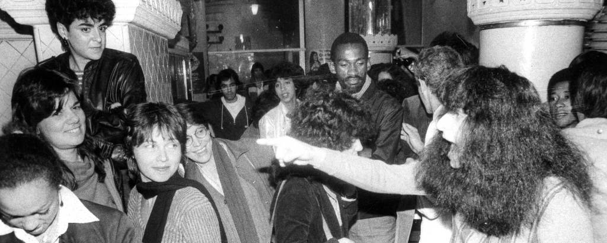

Por: Luiza Beneck e Julia Cerniak
A moda é e sempre foi politica e também um reflexo do nosso tempo, uma ferramenta de comunicação qwue vai além de tendencias, peças e estética. Moda é movimento social, é posicionamento, e porisso, sua ligação com o movimento LGBT é impagável da memória e inquebravel do futuro, desde os principios, o movimento LGBT foi pioneiro na moda como sua aliada, não só por conta da falta de acessibilidade de pessoas queers a empregabilidade mas tambem por conta de ser um espaço com representatividade, e claro, um espaço em que essas pessoas poderiam ter a visibilidade que merecem. Desde o século passado com a criação da maior parte das marcas que conhecemos na atualidade, havia representando a linha de frente dessas marcas homens homossexuais, vivendo livremente e abertamente a sua sexualidade (na medida do possível, pois na época era inaceitável que pessoas queers pudessem ter a sua liberdade). Logo, que não era raro existir criações chocantes vindo dessas personalidades, como por exemplo o terno para mulheres da Yves Saint Laurent em 1966 (Le Smoking) e também o estilista Christian Dior que criou o New Look em 1947, redesenhando a silhueta pós guerra com cinturas marcadas e saias volumosas. /
Por: Luiza Beneck e Julia Cerniak
Mas, a realidade para mulheres LBT+ historicamente foi de invisibilidade, o machismo estrutural da indústria, o apagamento da figura feminina em lugares de ´poder´e o apagamento de suas sexualidades e identidades de gênero, fez com que as mulheres queer começassem a revolucionar o mercado principalmente editorial e logo em seguida o ativismo e a alfaiataria, tendo nomes como Dorothy Todd e Madge Garland, assumindo o comando da British Vogue em 1922, o casal transformou a revista de um catálogo elitista em um polo de modernidade e vanguarda artística, popularizando cortes de cabelo curtos (bob curt) e a estética andrógina dos anos 1920, Jil Sander, uma renomada estlista lésbica alemã revolucionou a moda nos anos 80 e 90 ao criar o chamado minimalismo moderno. Suas criações focavam em tecidos de alta qualidade e uma alfaiataria desconstruída que oferecia poder e autenticidade para mulheres no mercado de trabalho, Jenna Lyons, ex diretora criativa da J.Crew Lions revolucionou o streetwear de luxo americano, ela popularizou a mistura de peças casuais e formais, e desafiou os padrões estéticos da sociedade com seu estilo tomboy autêntico, Stella McCartney, é conhecida por seu compromisso com a sustentabilidade e a ética na moda, além de promover práticas ecológicas, McCartney também apoia a inclusão e a diversidade, em muitas de suas coleções, a estilista celebra a individualidade e a identidade, refletindo um compromisso com a representatividade. A marca de Stella frequentemente participa de campanhas e colaborações que beneficiam causas sociais, incluindo a comunidade LGBTQIA+.
Por: Luiza Beneck e Julia Cerniak
Falando mais a dentro sobre moda, podemos citar inúmeros modelos tanto da atualidade quanto de antigamente que sao pioneiros no que fazem na passarela e sao destaques queers HUNTER SCHAFER Hunter é uma mulher transsexual e ficou mais conhecida em 2019, após estrear como atriz na série Euphoria. Na época, afirmou à Variety: “Precisamos de mais papéis em que pessoas trans não estão lidando apenas com serem trans; elas são trans enquanto lidam com outros problemas. Nós somos muito mais complexos do que nossa identidade“. Sua carreira como modelo de passarela e principalmente de ensaios fotográficos vem desde muito antes disso, ela ja trabalhou com Dior, Miu Miu, Marc Jacobs, Prada (que é embaixadora inclusive), Calvin Klein e ETC… LOLI BAHIA(no qual seu nome real é Dolorès-Bahia Roubille) é uma das supermodelos mais influentes da atualidade. Nascida em Lyon, na França, em 19 de setembro de 2002, a jovem de 23 anos converteu-se em um dos principais rostos da Geração Z nas passarelas internacionais, faz parte da comunidade LGBT por mais que nunca tenha dito à público qual sua sexualidade, ja expos diversos relacionamentos amorosos com mulheres, atualmente vive em um affair com a cantora Rosalía. Também já teve sua estreia no cinema interpretando a jovem Jeanne du Barry no filme Jeanne du Barry (2023), que abriu o Festival de Cannes. Loli é queridinha das marcas e se tornou embaixadora global da Yves Saint Laurent Beauty e musa frequente da Chanel, ela já abriu o icônico desfile Vogue World: Paris em 2024 e a coleção Cruise 2025 da Chanel, atualmente Loli é presença garantida nas semanas de moda de Paris, Milão e Nova York, além de acumular capas na Vogue internacional.